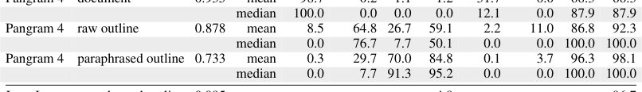
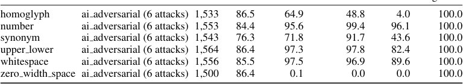
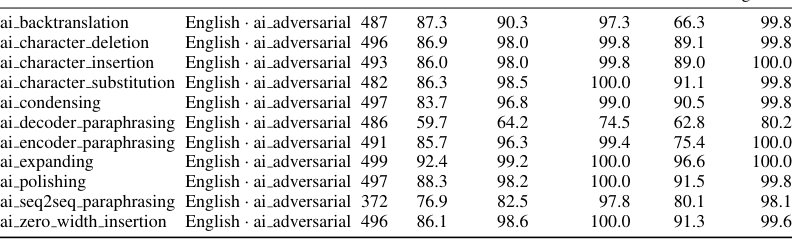
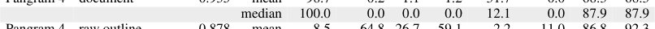

IdeaLens: sun'iy intellekt g'oyalarini insonnikidan ajratish

Rasmning to'liq tavsifi
1-rasm: IDEALENS gʻoyalarni kuzatish; anʼanaviy detektorlar matnni kuzatadi. Biz umumiy kelib chiqish (toʻliq inson yoki toʻliq sunʼiy intellekt) va aralash kelib chiqish (inson gʻoyalari va sunʼiy intellekt nasri yoki sunʼiy intellekt gʻoyalari va inson nasri) stsenariylarini qamrab oluvchi toʻrtta kvadrantni taqdim etamiz. Anʼanaviy detektorlardan (masalan, Pangram4, Glickenhaus va boshq., 2026; EditLens-3B, Thai va boshq., 2026) farqli oʻlaroq, IDEALENS nasr manbasini emas, balki gʻoyalar manbasini aniq aniqlay oladi. IDEALENS inson gʻoyalari asosida sunʼiy intellekt tomonidan yaratilgan hujjatlarning 94,7 foizini insonniki deb tasniflaydi, Pangram esa atigi 43,8 foizini insonniki deb belgilaydi. Sunʼiy intellekt gʻoyalariga ergashgan insonlar tomonidan yozilgan hikoyalarning yangi maʼlumotlar toʻplamimizda (§3), IDEALENS 68,0 foizini sunʼiy intellekt deb belgilaydi, Pangram va EditLens esa mos ravishda atigi 8,0 foiz va 0,0 foizni belgilaydi.
Zamonaviy vositalar matn kim tomonidan yozilganini aniqlaydi, ammo g'oyalar manbasini ko'ra olmaydi. IdeaLens usuli hujjatlarni tuzilmaviy rejalarga aylantirib, uslubiy qobiqdan xoli bo'lgan mazmunni tahlil qiladi. Bu inson tomonidan yozilgan, lekin sun'iy intellekt g'oyalariga asoslangan matnlarni fosh etishga yordam beradi.
Asosiysi
- IdeaLens matn uslubini emas, g'oyalar tuzilishini tahlil qiladi.
- Model 1 million hujjat va Pangram 4 belgilari bilan o'qitilgan.
- Tizim boshqa detektorlar ko'ra olmaydigan sun'iy g'oyalarni fosh etadi.
Batafsil
Tadqiqotchilar «g'oya kelib chiqishi» (idea provenance) tushunchasiga asoslangan IdeaLens detektorini taqdim etishdi. Tizim hujjatni diskursiv rollar va qisqacha mazmun ro'yxatiga aylantiradi, bu esa so'z darajasidagi o'xshashlikni kamaytiradi. Model 1 million hujjatdan iborat FineWeb ma'lumotlar to'plamida Pangram 4 detektori yordamida o'qitilgan.
Sinovlar shuni ko'rsatdiki, inson rejalari asosida yozilgan matnlarda sun'iy intellekt deb noto'g'ri belgilash darajasi 95% dan 7% gacha tushadi. Aksincha, inson sun'iy intellekt rejasi asosida yozganda, IdeaLens 68% hollarda «mashina izi»ni aniqlaydi. Usul 24 ta tilga moslashgan bo'lib, turli format va sohalarda barqaror natija beradi.
Cheklovlar
Model ehtimoliy bashoratlarga asoslanadi va yozish jarayonining mutlaq dalili emas.
Maqolaning batafsil tahlili
Annotatsiya
Zamonaviy sunʼiy intellekt (SI) detektorlari matnni kim yozganini aniqlashga qaratilgan, ammo bugungi siyosiy talablar gʻoyalar muallifligini aniqlashni taqozo etadi. Tadqiqotchilar IDEALENS detektorini taqdim etdilar. U matnni kim yozganidan qatʼi nazar, gʻoyalar inson yoki SI tomonidan yaratilganini aniqlaydi. Gʻoyalarni uslubdan ajratish uchun hujjatlar konspekt koʻrinishiga keltiriladi: har bir qism uchun diskursiv rol va qisqacha mazmun yoziladi. Bu asl matn bilan soʻz darajasidagi oʻxshashlikni kamaytiradi.
Muhim
IDEALENS matn uslubiga emas, balki gʻoyalar manbasiga eʼtibor qaratadi va tahlil uchun konspektlardan foydalanadi.
IDEALENS modeli Pangram detektori yordamida belgilangan 1 million FineWeb hujjatlari asosida oʻqitildi. Konspektlar sirtqi til xususiyatlaridan xoli boʻlgani uchun model gʻoyalar tuzilishiga tayanadi. Nazorat qilinadigan tajribada modellar inson tomonidan tuzilgan batafsil rejalar asosida yozganda, IDEALENS’ning SI deb belgilash darajasi 95% dan 7% gacha tushdi, Pangram 4 esa 92% holatda SI deb belgilashda davom etdi. SI tomonidan yaratilgan rejalar ishlatilganda, IDEALENS 96% dan yuqori aniqlikni saqlab qoldi.
Izoh
Konspekt — bu matn mazmunini saqlagan holda, muallif uslubini chetlab oʻtadigan qisqacha bayon.
Insonlar SI tomonidan yaratilgan rejalar asosida yozgan 50 ta hikoyadan iborat yangi toʻplamda IDEALENS 68% hollarda SI gʻoyalarini aniqladi, Pangram 4 esa atigi 8% holatda aniqladi. 19 ta mavjud benchmarkda oʻtkazilgan sinovlar IDEALENS turli domenlar va tillarda yuqori aniqlikni saqlashini koʻrsatdi. 90 mingta bashorat tahlili inson va SI gʻoyalari oʻrtasidagi tizimli farqlarni aniqlashga yordam berdi. Tadqiqotchilar oʻz modellari va maʼlumotlar toʻplamini ochiq foydalanishga taqdim etdilar.
Ehtiyot bo'ling
Model samaradorligi cheklangan maʼlumotlar toʻplamida tekshirilgan; natijalar soha murakkabligiga qarab oʻzgarishi mumkin.
Kirish
2026-yil avgust oyida Pangram sunʼiy intellekt detektori Stenli Drakenmillerning Wall Street Journal gazetasidagi maqolasini toʻliq sunʼiy intellekt tomonidan yozilgan deb belgiladi. Investor AI ishlatganini tan oldi, ammo muharrir Pol Gigo maqola mualliflik gʻoyalariga asoslanganini taʼkidlab, uni himoya qildi. Bu holat «matn kelib chiqishi» (soʻzlarni kim yozgan) va «gʻoya kelib chiqishi» (uni kim oʻylab topgan) oʻrtasidagi farqni koʻrsatadi.
Mualliflar gʻoyalar kelib chiqishini aniqlovchi IDEALENS detektorini taklif qilishadi. Metod yozishning kognitiv modeliga asoslanadi: gʻoyalar matnning aniq soʻzlaridan emas, balki uning tuzilmasi (tezislar, voqealar, mantiq) orqali belgilanadi. Model FineWeb korpusidan olingan 1 millionta reja (outline) asosida oʻqitilgan. Nazorat uchun PROSELENS modeli yaratilgan boʻlib, u xuddi shu maʼlumotlarda, lekin matnning oʻzi asosida oʻqitilgan.
Izoh
«Autlayning» metodi matnni uning tuzilmasi va diskurs rollarining qisqacha tavsifiga aylantirishni anglatadi, bu esa modelga uslubni emas, balki mantiqni baholash imkonini beradi.
•IDEALENS sunʼiy intellekt tomonidan yozilgan matnlardagi insoniy gʻoyalarni aniqlaydi
AI tomonidan turli rejalar asosida yaratilgan hujjatlarda IDEALENS «AI deteksiyasi» darajasini 94,9% dan (minimal inson aralashuvi bilan) 6,8% gacha (toʻliq inson rejasi bilan) pasaytiradi. Shu bilan birga, PROSELENS va Pangram bunday matnlarni AI mahsuli deb belgilashda davom etadi (mos ravishda 86,5% va 92,4%). Tahrirlash va qayta yozish boʻyicha 10 ta tashqi benchmarkda IDEALENS xato qilib 5,6% hujjatni AI deb belgilaydi, PROSELENS esa 46,0% va Pangram 52,0% ni tashkil etadi.
Muhim
IDEALENS matn detektorlariga qaraganda ancha kam xato bilan insoniy niyatni AI ijrosidan ajratib koʻrsatadi.
•IDEALENS inson yozgan matnlardagi AI gʻoyalarini aniqlaydi
Mualliflar AI gʻoyalari asosida odamlar tomonidan yozilgan 50 ta hikoyadan iborat maʼlumotlar toʻplamini yigʻishdi. IDEALENS gʻoyalarning AI kelib chiqishini 68,0% hollarda aniqladi, matn detektorlari esa deyarli hech narsani sezmadi (PROSELENS 0%, Pangram 8,0%), chunki soʻzlar inson tomonidan yozilgan edi.
Ehtiyot bo'ling
Tadqiqot sintetik maʼlumotlar va model bashoratlariga asoslangan; natijalar aniq matnni yozish jarayonining bevosita dalili emas.
•Samaradorlik va tillararo moslashuv
Toʻliq inson va toʻliq AI matnlarini ajratish boʻyicha 19 ta testda IDEALENS 0,6% xato bilan 91,1% AI hujjatlarini aniqlaydi. Model faqat ingliz tilida oʻqitilgan boʻlsa-da, u inglizcha rejalar yordamida 24 ta tilda samarali ishlaydi va 0,1% xato bilan 95,3% AI hujjatlarini aniqlaydi.
•Baholash mezonlari tahlili
90 mingta bashorat tahlili shuni koʻrsatdiki, IDEALENS gʻoyalarni, agar ular kontekstsiz raqamlar yoki usullarni oʻz ichiga olsa, «AI tomonidan yaratilgan» deb baholaydi. Aksincha, tekshirilishi mumkin boʻlgan manbalar va muammolarni muhokama qiluvchi gʻoyalar «insoniy» deb tan olinadi. Mualliflar kod va maʼlumotlarni ochiq foydalanishga taqdim etishdi.
GʻOYALAR KELIB CHIQISHINI STRUKTURAVIY REJALAR ORQALI OʻRGANISH
Gʻoya detektorini oʻqitishdagi asosiy qiyinchilik shundaki, matn muallifligi boʻyicha maʼlumotlar boʻlsa-da, hujjatdagi gʻoyalar kimga tegishli ekanligi boʻyicha keng koʻlamli belgilar (labels) mavjud emas. Ushbu muammoni hal qilish uchun biz hujjatlarning mazmunini saqlab qoladigan, ammo asl leksikani istisno qiladigan «rejalar» (outlines) asosida modelni oʻqitamiz. Buning uchun biz har bir yozish formati uchun xos boʻlgan diskursiv rollarni aniqlaymiz, hujjat rejasini ajratib olamiz va muallifning uslubiy belgilarini yoʻqotish uchun uni qayta bayon qilamiz. IDEALENS modeli qayta bayon qilingan reja asosida mualliflikni (inson yoki sunʼiy intellekt) bashorat qilishga oʻrgatiladi, PROSELENS esa buni asl matn asosida amalga oshiradi.
Muhim
Asl matn oʻrniga qayta bayon qilingan rejalardan foydalanish modelga muallifning uslubiy xususiyatlariga emas, balki gʻoyalar tuzilishiga eʼtibor qaratish imkonini beradi.
WildOutlines korpusini shakllantirish uchun biz WebOrganizer va Pangram 3.3.2 yordamida belgilangan WildAI toʻplamidan 1 million hujjatni tanlab oldik. Biz tanlovni 500 soʻzdan kam boʻlmagan, sakkizta formatdan biriga tegishli (Jadval 12) ingliz tilidagi matnlar bilan chekladik. «Aralash mualliflik» belgisiga ega hujjatlar chiqarib tashlandi, chunki ularda gʻoyalar manbasini aniq belgilash imkonsiz. Yakuniy maʼlumotlar toʻplami oʻqitish (842 ming), validatsiya (30 ming), kalibrlash (80 ming) va test (50 ming) qismlariga boʻlingan.
Izoh
Diskursiv rol — bu matn parchasi hujjatning umumiy tuzilmasida bajaradigan funksiyadir (masalan, «voqeani tasvirlash» yoki «bozor reaksiyasini baholash»).
Rejalarni avtomatik ajratib olish
WildOutlines oʻquv toʻplamini yaratish jarayoni uch bosqichdan iborat: (i) Rollarni aniqlash: biz TopicGPT freymvorkini moslashtirdik va har bir format uchun bazaviy rollarni yaratishda GPT-5.6 Sol modelidan foydalandik. Qoʻlda tekshirish va dublikatlarni oʻchirishdan soʻng, biz rollar toʻplamini oldik (masalan, badiiy boʻlmagan matnlar uchun 42 ta rol). (ii) Rejalarni ajratib olish: Gemini 3.7 Flash va Gemini 3.1 Pro modellari yordamida biz hujjatlarni «rol — mazmun tavsifi» juftliklari ketma-ketligiga aylantiramiz. (iii) Qayta bayon qilish: model muallif uslubidan «shpalgalka» sifatida foydalanmasligi uchun biz rejalarni Gemini 3.1 Pro yordamida qayta bayon qilamiz. Bu rejalardagi «insoniy» uslub ulushini 8,5% dan 0,3% gacha kamaytiradi (Jadval 9), shu bilan birga asl nusxa bilan kosinus oʻxshashlik 0,93 darajasida saqlanib qoladi (Jadval 10).
Ehtiyot bo'ling
Qayta bayon qilish faqat oʻqitish jarayonida qoʻllanadi, chunki uslubiy belgilarning sizib chiqishini istisno qilish kerak; inferensiya (test) bosqichida IDEALENS asl rejalar bilan ishlaydi.
IDEALENS va PROSELENS ni oʻqitish
Ikkala model ham LoRA usuli yordamida qoʻshimcha oʻqitilgan Nemotron-3.5-Lightning-30B-A3B arxitekturasiga asoslangan. Modellar 1% darajasidagi notoʻgʻri ijobiy natijalar (FPR) chastotasini taʼminlaydigan chegara boʻyicha kalibrlanadi. Ikkala model ham bir xil arxitektura va maʼlumotlardan foydalanganligi sababli, ularning natijalaridagi farqlar faqat asl matndan reja koʻrinishidagi taqdimotga oʻtish bilan bogʻliq.
Jadval 1. ExamplesofitemsforfourcoredifferencesbetweenhumanandAIideas.Thefirst column describes each contrast and summarizes how it is realized in human and AI ideas.

EKSPERIMENTAL QURILMA
Mualliflar IDEALENS va PROSELENS modellarini 17 ta mavjud detektor, jumladan Pangram 4 bilan solishtirib ko‘rishdi. Sinov 19 ta tashqi benchmark va uchta maxsus yaratilgan ma’lumotlar to‘plami: IDEASHIFT, IDEASHIFT-X va TWICETOLD asosida o‘tkazildi. Ushbu to‘plamlar to‘rtta stsenariyni qamrab oladi: to‘liq inson yoki to‘liq AI tomonidan yaratilgan hujjatlar, hamda aralash variantlar (inson g‘oyalari AI matnida yoki AI g‘oyalari inson matnida). G‘oya detektorlari barcha to‘rtta kvadrantda yuqori aniqlik ko‘rsatishi, proza detektorlari esa aralash holatlarda past samaradorlik ko‘rsatishi kutiladi.
Muhim
G‘oya detektorlari matn uslubidan qat’i nazar, g‘oya manbasini aniq belgilashi kerak, proza detektorlari esa faqat lingvistik naqshlarga tayanadi.
AI g‘oyalarini aniqlash aniqligini baholash uchun bashorat qilingan yorliqning (AI yoki inson) g‘oya manbasiga mos kelish metriklari ishlatiladi. Bazaviy modellar sifatida Pangram 4, EditLens-Llama-3.2-3B, Fast-DetectGPT, Binoculars, MELD va Desklib tanlangan. IDEALENS, PROSELENS va EditLens uchun kalibrlash to‘plamida 1% soxta ijobiy natijalar (FPR) chastotasiga mos keladigan global chegara o‘rnatilgan.
Izoh
FPR (False Positive Rate) — model inson matnini noto‘g‘ri AI matni deb tasniflagan holatlar ulushi.
19 ta tashqi benchmarkdan 14 tasi umumiy kelib chiqishga ega hujjatlarni o‘z ichiga oladi. Qo‘shimcha ravishda, Pangram tomonidan belgilangan 50 000 ta hujjatdan iborat test to‘plami va FPRni o‘lchash uchun C4 korpusidan (ChatGPT paydo bo‘lishidan oldin yaratilgan) 10 000 ta hujjat ishlatiladi. Shuningdek, 10 ta benchmark inson tomonidan yozilgan, ammo AI tomonidan tahrirlangan matnlarni o‘z ichiga oladi.
IDEASHIFT rejaning batafsilligi deteksiyaga ta’sirini o‘rganadi. To‘plam 500 ta boshlang‘ich hujjatni o‘z ichiga oladi, ular uchun GPT-5.6 Sol besh darajali promptlarni yaratadi: 0-darajadan (faqat mavzu) 5-darajagacha (to‘liq reja). Proza AI tomonidan yaratilgani uchun, proza detektorlari hammasini AI deb tasniflashi kerak, ammo g‘oya detektorlari inson rejalari asosida yaratilgan hujjatlarda aniqlik pasayishini ko‘rsatishi kerak.
TWICETOLD teskari stsenariyni o‘rganadi: inson AI tomonidan yaratilgan reja asosida matn yozadi. To‘plam AI rejalari asosida insonlar tomonidan yozilgan 50 ta hikoyadan (har biri 500 so‘z) iborat.
IDEASHIFT-X IDEALENS’ning ko‘p tilli muhitdagi ishini tekshiradi. Model har qanday tildagi hujjatlar uchun ingliz tilidagi rejalarni yarata oladigan LLM-ekstraktordan foydalangani uchun, u qo‘shimcha o‘qitishsiz qo‘llanilishi mumkin. To‘plam FineWeb2’dan 24 tilda olingan 10 000 ta inson hujjatini o‘z ichiga oladi.
IDEALENS gʻoyalarni aniqlaydi, AI uslubini emas
IDEALENS matn uslubini emas, balki gʻoyalarning kelib chiqishini tahlil qiladi. IDEASHIFT promtlaridagi insoniy reja batafsillashgani sari, IDEALENS’ning notoʻgʻri aniqlash darajasi 94,9% dan (0-daraja) 6,8% gacha (5-daraja) pasayadi (4a-rasm). Aksincha, PROSELENS va Pangram 4 inson gʻoyalarining darajasidan qatʼi nazar, hujjatlarning 86–100% ini AI deb belgilaydi. Agar reja inson emas, AI tomonidan tuzilgan boʻlsa, IDEALENS har doim hujjatlarning 96% dan ortigʻini AI deb aniqlaydi (25-jadval). Eng katta pasayish 3 va 4-darajalar orasida kuzatiladi, bu bosqichda promtlar tarkibiy rollardan tashqari aniq mazmunni ham oʻz ichiga oladi (24-jadval).
Muhim
IDEALENS insoniy promtlar batafsillashganda notoʻgʻri aniqlash darajasini sezilarli darajada kamaytirib, gʻoya manbasiga nisbatan yuqori sezgirlikni koʻrsatadi.
IDEALENS inson gʻoyalarining AI tomonidan qayta yozilishiga chidamli. AI inson matniga yuzaki oʻzgartirishlar kiritgan 12 ta benchmarkda IDEALENS hujjatlarning 94,7% ini insonniki deb belgilaydi (PROSELENS — 50,7%, Pangram 4 — 43,8%, 19-jadval). GEDE maʼlumotlar toʻplamida IDEALENS LLM tomonidan kiritilgan kichik tuzatishlardan soʻng inson insholarining atigi 0,5% ini AI deb belgilaydi. HART testida IDEALENS AI tomonidan qayta yozilgan matnlarning 4,9% ini AI deb belgilaydi, bu Pangram 4 (42,8%) va PROSELENS (44,5%) koʻrsatkichlaridan ancha past.
Izoh
«Parafrazlash» — bu matnning shaklini oʻzgartirib, asl maʼnoni saqlab qolish jarayoni boʻlib, bu uslubga asoslangan detektorlarni chalgʻitishi mumkin.
IDEALENS inson tomonidan yozilgan TWICETOLD nasriy asarlaridagi AI gʻoyalarini aniqlaydi. IDEALENS ushbu hikoyalarning 68% ini (95% CI 54–79%) AI deb belgilaydi, PROSELENS esa 0%, Pangram 4 esa 8% ni tashkil etadi. Barcha detektorlar asl AI hikoyalarini aniqlashda ishonchli (96–100%), ammo faqat IDEALENS insoniy hikoyalar uchun oʻz bashoratini saqlab qoladi (4b-rasm). Xatolarning 12 tasi fantastik elementlarga ega hikoyalarga toʻgʻri keladi.
IDEALENS mavjud ochiq detektorlardan ustun. 19 ta baholash qismida IDEALENS 0,6% FPR (notoʻgʻri ijobiy natija) darajasida AI hujjatlarining 91,1% ini aniqlaydi, EditLens-3B esa 0,2% FPR darajasida 81,8% ni aniqlaydi (21-jadval). PROSELENS toʻliq matn boʻyicha oʻqitilganda 98,9% natijaga erishadi. C4 maʼlumotlar toʻplamidagi 10 000 ta eski hujjatda IDEALENS atigi 0,01% xatolik koʻrsatadi. Modelning zaif tomoni — DIPPER parafrazlash usuli (77,6% aniqlash), bu kontentning ham oʻzgarishi bilan bogʻliq boʻlishi mumkin.
1 Hal qiluvchi va universal detallar
Detallar muallifning xulosasini oʻzgartirishi yoki har qanday mavzuga mos kelishi mumkin. Masalan, Sony Cyber-shot RX100’dagi mini-HDMI porti va batareya boʻlinmasi — bu aniq fizik fakt, Jony Ive dinamigining estetikasi esa har qanday premium qurilmaga mos kelishi mumkin boʻlgan umumiy tavsifdir.
2 Funksional va koʻrinishdagi aniqlik
Raqamlar tekshirilishi mumkin yoki shunchaki aniqlik illyuziyasini yaratishi mumkin. 10 kun ichida 700 yuan foyda koʻrish — bu oʻlchanadigan fakt. «Texnik toʻsiqlarni bartaraf etish» yoki «mutaxassislar bilan muhokama qilish» kabi umumiy tavsiyalar esa ekspert uslubini taqlid qiladi, lekin tekshiriladigan maʼlumotga ega emas.
Ehtiyot bo'ling
Umumiy maslahatlarni oʻz ichiga olgan matnlar faktik maʼlumot bermasdan ekspert uslubini taqlid qilishi mumkin.
3 Cheklangan va haddan tashqari kengaytirilgan daʼvolar
Daʼvolar aniq chegaralarga ega boʻlishi yoki dalillardan tashqariga chiqishi mumkin. 2022-yil oʻrtalarida maʼlum bir markazdan flotni ishga tushirish — bu tekshiriladigan fakt. 2025-yilgi Kia K4 «doimiy meros» va «yangi standart» boʻladi degan prognoz esa spekulyativ boʻlib, dalillar bilan tasdiqlanmagan.
4 Saqlangan va oʻchirilgan xarajatlar
Mualliflar matnlarda cheklovlar qanday qabul qilinishini tahlil qiladilar. Insonlar yozgan matnlarda real toʻsiqlar (masalan, itni oʻqitishdagi logistik qiyinchiliklar) saqlanib qoladi, sunʼiy intellekt (SI) modellari esa vaziyatni ideal deb tasvirlab, kamchiliklarni eʼtiborsiz qoldiradi. Misol tariqasida M3 MacBook Air noutbukining baholanishi keltirilgan: SI uni «ideal muvozanat» deb taʼriflaydi va kamchiliklarni aytmaydi, insonlar esa cheklovlarni aniq koʻrsatib oʻtadilar.
Muhim
IDEALENS modeli SI gʻoyalarini aniqlashda yuqori aniqlik (95,3%) koʻrsatadi va matn qaysi tilda yozilganidan qatʼi nazar barqaror natija beradi.
IDEALENS tizimi IDEASHIFT-X maʼlumotlar toʻplami doirasida 24 ta tilda sinovdan oʻtkazildi. Faqat ingliz tilida oʻqitilganiga qaramay, model 0-darajali (toʻliq SI) hujjatlarning 95,3 foizini va 5-darajali (toʻliq inson) hujjatlarning atigi 0,7 foizini toʻgʻri tasniflaydi. Taqqoslash uchun, proza detektorlari (PROSELENS, Pangram4) ayniqsa kam resursli tillarda (tamil, amxar) yomonroq natija koʻrsatadi. FineWeb2’dan olingan 10 000 ta inson matnida model past darajadagi notoʻgʻri ijobiy natijalarni (FPR) — 0,1% ni tashkil etdi.
IDEALENS reja (outline) asosida oʻqitilgan boʻlsa-da, «xom» matn bilan ham samarali ishlaydi. Umumiy kelib chiqishni tahlil qilishda model 0,3% FPR bilan SI hujjatlarining 96,1 foizini aniqlaydi. Biroq, SI gʻoyalar yaratib, inson matn yozgan TWICETOLD benchmarkida model SI kontentining atigi 6 foizini taniydi, chunki insoniy detallar SI gʻoyalarini «yashiradi».
SI gʻoyalarini inson gʻoyalaridan nima ajratib turadi
Farqlarni tushunish uchun mualliflar ablasyon tadqiqotini (36-jadval) oʻtkazdilar. Bu tadqiqot IDEALENS asosan mazmunga tayanib, rollar yoki tuzilishga emasligini koʻrsatdi. Russell va boshqalar (2026b) metodologiyasidan foydalanib, mualliflar 90 000 ta bashoratdan 79 ta talqin qilinadigan xususiyatni ajratib oldilar.
Izoh
Ablasyon tadqiqoti (ablation study) — bu modelning alohida komponentlari yoki maʼlumotlarini ketma-ket olib tashlash orqali ularning yakuniy natijaga qanchalik taʼsir qilishini tushunish usuli.
Asosiy farqlar quyidagilardir: SI gʻoyalari koʻpincha mavhum va har qanday narsaga mos keladi (masalan, har qanday dinamik uchun «premium ovoz sifati»), inson gʻoyalari esa kontekst uchun muhim boʻlgan aniq detallarni oʻz ichiga oladi (masalan, shtativdan foydalanishdagi muammolar). SI koʻpincha aniq koʻrinadigan, lekin amaliy qiymatga ega boʻlmagan maslahatlar beradi (masalan, qanday joriy etishni tushuntirmasdan «Agile metodologiyasi»). Bundan tashqari, SI ahamiyatni boʻrttirishga (kelajak haqidagi bashoratlar) va kamchiliklarni yashirishga moyil, insonlar esa ehtiyotkorona prognozlar qiladi va cheklovlarni ochiq tan oladi.
Bogʻliq ishlar
SI matn detektorlari (Mitchell va boshqalar, 2023 va b.) proza muallifligini binar tasniflashga qaratilgan. Aralash mualliflik boʻyicha tadqiqotlar odatda SI ni tahrirlash vositasi sifatida koʻradi yoki mazmunni uslubdan ajratishga harakat qiladi. Ulardan farqli oʻlaroq, IDEALENS matnning oʻziga emas, balki yozish jarayonining kognitiv nazariyalariga (Flower & Hayes, 1981) tayanib, gʻoyalar kelib chiqishini oʻrganadi. Mualliflar uslubiy oʻzgarishlarni normallashtirish usullariga (Krishna va boshqalar, 2020) oʻxshash, ammo teskari yoʻnalishda ishlaydigan transformatsiya qilingan maʼlumotlarda oʻqitish prinsipini qoʻllaydilar.
Xulosa
Jadval 2. Accuracy by document length on the out-of-domain evaluations (%, global 1% cut).The training corpus has no documents under 500 words.


Jadval 32. MELD, per attack:by attack.Fire rate % at the 1% cut.


Jadval 33. DetectRL-X, per attack:by attack.Fire rate % at the 1% cut.


Asosiy xulosalar
Tadqiqot shuni koʻrsatadiki, sunʼiy intellekt (SI) tomonidan yaratilgan matnlar va inson tomonidan yozilgan matnlarni gʻoyalar tahlili orqali samarali ajratish mumkin. Mualliflar 1 000 000 ta rejalar (outlines) korpusidan foydalanib, proza detektoridan olingan «kumush» yorliqlar yordamida IDEALENS modelini oʻqitdilar. Model 22 ta maʼlumotlar toʻplamida sinovdan oʻtkazildi.
Muhim
IDEALENS modeli gʻoyalarning kelib chiqishini muvaffaqiyatli aniqlaydi, mavjud analoglardan ustun turadi va faqat ingliz tilida oʻqitilganiga qaramay, 24 ta til bilan ishlash qobiliyatini namoyish etadi.
IDEALENS gʻoyalar kelib chiqishini matn tuzilmasidan farq qilganda ham kuzatib boradi. Xuddi shu yorliqlar asosida, lekin xom matn ustida oʻqitilgan PROSELENS nazorat modelidan farqli oʻlaroq, IDEALENS yuqoriroq aniqlikni koʻrsatadi. 13 616 ta ajratilgan elementlarda 79 ta belgidan 64 tasi IDEALENS baholari bilan «SI insonga qarshi» tasniflash yoʻnalishida mos keldi, bunda faqat bitta holatda qarama-qarshilik aniqlandi (§J.3 va 44-jadval).
Izoh
«Kumush» yorliqlar — bu qoʻlda belgilangan «oltin» maʼlumotlar boʻlmaganda, oʻqitish uchun boshqa algoritmlar yordamida avtomatik olingan maʼlumotlardir.
Tadqiqot cheklovlari
Mualliflar usulning bir qator cheklovlarini (§A) qayd etadilar. Oʻqitish yorliqlari gʻoyalarning kelib chiqishini faqat taxminiy aks ettiradi, binar tasniflash esa inson va SI hamkorligida yaratilgan matnlarni toʻgʻri qayta ishlashga imkon bermaydi. Bundan tashqari, modelning samaradorligi qisqa matnlarda va baʼzi raqobatbardosh hujumlarda pasayadi. Rejalarni ajratib olish jarayoni xususiy modellarga bogʻliq, TWICETOLD maʼlumotlar toʻplami esa 50 ta hikoya bilan cheklangan.
Ehtiyot bo'ling
Model cheklovlarga ega: u qisqa matnlarda kamroq samarali va gʻoya tuzilmasini ajratib olish uchun uchinchi tomon xususiy algoritmlariga tayanadi.
Rasmning to'liq tavsifi
1-rasm: IDEALENS gʻoyalarni kuzatish; anʼanaviy detektorlar matnni kuzatadi. Biz umumiy kelib chiqish (toʻliq inson yoki toʻliq sunʼiy intellekt) va aralash kelib chiqish (inson gʻoyalari va sunʼiy intellekt nasri yoki sunʼiy intellekt gʻoyalari va inson nasri) stsenariylarini qamrab oluvchi toʻrtta kvadrantni taqdim etamiz. Anʼanaviy detektorlardan (masalan, Pangram4, Glickenhaus va boshq., 2026; EditLens-3B, Thai va boshq., 2026) farqli oʻlaroq, IDEALENS nasr manbasini emas, balki gʻoyalar manbasini aniq aniqlay oladi. IDEALENS inson gʻoyalari asosida sunʼiy intellekt tomonidan yaratilgan hujjatlarning 94,7 foizini insonniki deb tasniflaydi, Pangram esa atigi 43,8 foizini insonniki deb belgilaydi. Sunʼiy intellekt gʻoyalariga ergashgan insonlar tomonidan yozilgan hikoyalarning yangi maʼlumotlar toʻplamimizda (§3), IDEALENS 68,0 foizini sunʼiy intellekt deb belgilaydi, Pangram va EditLens esa mos ravishda atigi 8,0 foiz va 0,0 foizni belgilaydi.

Rasmning to'liq tavsifi
2-rasm: IDEALENS har bir hujjatning rejasini koʻradi, butun matnni emas. Hujjatlarga format tayinlanadi va ular reja shakliga keltiriladi, har biri format rollaridan biri bilan belgilanadi. Ushbu misol maqoladan olingan 17 ta reja elementidan ikkitasini koʻrsatadi. Oʻqitish uchun rejalar asl hujjatlardan koʻchirilgan soʻzlarni olib tashlash uchun qayta ifodalanadi. IDEALENS oʻqitish jarayonida qayta ifodalangan rejadan Pangram yorligʻini oʻrganadi va chiqarilgan rejalar inferensiya vaqtida taqdim etiladi.

Rasmning to'liq tavsifi
3-rasm: Reja asosida oʻqitilgan IDEALENS gʻoya muallifligini aniqlaydi, anʼanaviy detektorlar esa nasr muallifligini kuzatadi. Gʻoyalar va nasr bitta muallif tomonidan (x-oʻqi) va turli mualliflar tomonidan (y-oʻqi) boʻlingan barcha benchmarklar boʻyicha oʻrtacha aniqlik. IDEALENS ham umumiy (95,3%), ham aralash (81,3%) mualliflik bilan aniq ishlaydigan yagona detektordir. 3-rasmda 22 ta benchmarkdan 51 ta baholash boʻlimi boʻyicha asosiy natijalarimiz umumlashtirilgan, bu yerda har bir nuqta umumiy va aralash kelib chiqish hujjatlarida gʻoyalarni aniqlashning umumiy aniqligi boʻyicha chizilgan detektordir. IDEALENS ham umumiy (95,3%), ham aralash (81,3%) sharoitlarda yuqori aniqlikka erishadigan yagona detektordir. PROSELENS va Pangram 4 umumiy kelib chiqish hujjatlarida juda aniq (mos ravishda 99,1% va 98,5%), ammo aralash sharoitlarda hujjat gʻoyalari manbasini aniqlay olmaydi (25,4% va 25,9%). PROSELENS IDEALENS bilan bir xil asos, oʻquv hujjatlari va oʻquv yorliqlariga ega boʻlgani uchun, bu bizning reja vakilligimiz taʼsirini taʼkidlaydi, buni ModernBERT asosidagi juftlik (Warner va boshq., 2025) boshqa asos bilan takrorlaydi. IDEALENS, shuningdek, test vaqtida xom matn kiritishlariga kutilmaganda yaxshi moslashadi, umumiy kelib chiqishda yuqori aniqlikni va PROSELENSga qaraganda aralash kelib chiqishda sezilarli darajada yuqori aniqlikni namoyish etadi.

Rasmning to'liq tavsifi
4-rasm: IDEALENS sunʼiy intellekt tomonidan yaratilgan matnda inson ishtirokining turli darajalarini aniqlaydi (chapda) va TWICETOLD hamda uning sunʼiy intellekt versiyalari uchun oʻxshash P(AI) qiymatlarini belgilaydi (oʻngda). (a) IDEASHIFTda IDEALENS sunʼiy intellekt tomonidan yaratilgan matndagi inson ishtirokining turli darajalari bilan kuzatiladigan yagona modeldir; sunʼiy intellekt nazoratida barcha modellar barcha darajalarda deyarli toʻliq ishlaydi. (b) TWICETOLDdagi sunʼiy intellekt va inson tomonidan yozilgan hikoyalar oʻrtasidagi P(AI) farqi IDEALENS uchun PROSELENSga qaraganda ancha kichikdir.

Rasmning to'liq tavsifi
5-rasm: INSONIY ASSOTSIATSIYA BALLARI taqsimoti. Har bir nuqta 79 ta xususiyatdan birini ifodalaydi; koʻk va toʻq sariq ranglar mos ravishda inson va sunʼiy intellekt bilan bogʻliq deb taklif qilingan xususiyatlarni koʻrsatadi. Ball — bu bir xil formatda xususiyat ishga tushadigan element detektorning insoniylik ballini xususiyat ishga tushmaydigan elementga qaraganda yuqoriroq olish ehtimolidir. 0,5 ball assotsiatsiya yoʻqligini bildiradi. Boʻsh nuqtalar 0,5ni oʻz ichiga olgan 95% bootstrap intervallariga ega; vertikal joylashtirish faqat koʻrinish uchun.

Rasmning to'liq tavsifi
6-rasm: Alohida xususiyatlar uchun inson assotsiatsiyasi ballari. Nuqtalar xususiyat ballarini, gorizontal chiziqlar esa ularning 95% butstrap intervallarini koʻrsatadi, ular taklif qilingan yoʻnalish boʻyicha guruhlangan. Inson tomonidan taklif qilingan xususiyatlar eng yuqori balldan eng pastigacha, sunʼiy intellekt (AI) tomonidan taklif qilinganlari esa eng pastdan eng yuqorisigacha tartiblangan, bunda har bir panelning taklif qilingan yoʻnalish bilan eng kuchli assotsiatsiyalari yuqorida joylashtirilgan. 0,5 dan yuqori ballar insonga, 0,5 dan past ballar esa AIga moyillikni bildiradi. Ichki qismi boʻsh nuqtalar 0,5 ni oʻz ichiga olgan intervallarga ega, x belgisi esa kuzatilgan moyilligi taklif qilingan yoʻnalishga zid boʻlgan xususiyatni koʻrsatadi.

Rasmning to'liq tavsifi
7-rasm: P(AI) detektori kvintillari boʻyicha xususiyatlarning faollashuvi. Elementlar har bir format doirasida P(AI) detektori boʻyicha reytinglangan va eng past P(AI) (1) dan eng yuqori P(AI) (5) gacha beshta guruhga boʻlingan. Har bir nuqta guruhdagi koʻrsatilgan xususiyat faollashadigan elementlar ulushini koʻrsatadi. Inson tomonidan taklif qilingan ikkita xususiyat (#13 va #3) uchun faollashuv kvintillar boʻylab pasayadi, AI tomonidan taklif qilingan xususiyat (#63) uchun esa ortadi.
Jadvallar
Jadval 3. Everyarmweevaluateanditslabelundertheidea-authorshiprule. “Attacked” marks model-written text that was humanized or adversarially rewritten; its ideas stay the model’s. “Mixed”armsarereportedasP(AI)only;“notplaced”armskeepmostofamodel’sproseaftera person’s edit and are left out of the quadrants.


Tadqiqot sxemasi
Preprint hali taqriz qilinmagan. Xulosalar dastlabki.
Manba
| Manba | Kategoriya | Preprint litsenziyasi |
|---|---|---|
| arXiv | provenance | arxiv |
Manbalar
| Manba | Havola |
|---|---|
| Страница препринта | arxiv.org |
| Полный текст (PDF) | arxiv.org |
| DOI | doi.org |
| Метаданные Crossref | api.crossref.org |
| Europe PMC | europepmc.org |